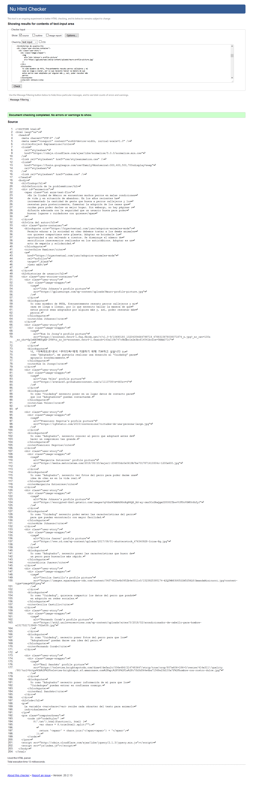

Tindog
Definición de la problemática
En la Ciudad de México se encuentran muchos perros en malas condiciones
de vida y en situación de abandono. En los años recientes ha
incrementado la cantidad de gente que busca a perros callejeros y los
rescatan para posteriormente, fomentar la adopción de los canes que
cuidan para poder darles un mejor hogar. Sin embargo, no hay páginas o
difusión adecuada con la seguridad que un usuario busca para poder
buscar lugares o cuidadores con quienes
Cita del autor
Permite educar a la sociedad en cómo debemos tratar a los demás animales
con quienes compartimos este planeta. Adoptar es brindarle la
oportunidad a uno salvando a cientos. Se disminuye el número de
sacrificios innecesarios realizados en los antirrábicos. Adoptar es un
acto de empatía y solidaridad.
Dulce Ramírez
Leer más
Historias de usuario
Yo como miembro de PETA, frecuentemente rescato perros callejeros y mi
casa se llega a llenar, por lo que necesito hallar la manera de que
estos perros sean adoptados por alguien más y, así, poder rescatar más
perros.
John Johnson
나, “아독따도르”로서 “쿠이다독”에게 지원하기 위해 기부하고 싶습니다 Yo
como “Adogtador”, me gustaría realizar una donación al “Cuidadog” para
apoyarlo económicamente.
Kim In Joong
Yo como “Cuidadog” necesito poner en un lugar datos de contacto para
que los “Adogtadores” puedan contactarme.
Juan Velez
Yo como “Adogtador”, necesito conocer al perro que adoptaré antes de
hacer un compromiso tan grande.
Francisco Segovia
Yo como “Adogtador”, necesito ver fotos del perro para poder darme una
idea de cómo es en la vida real.
Margarita Gutierres
Yo como “Cuidadog” necesito poder meter las características del perro
para que puedan encontrarlo con mayor facilidad.
Mike Johnson
Yo como “Adogtador”, necesito poner las características que busco de
un perro para buscarlos más rápido.
Alicia Juarez
Yo como “Cuidadog”, quisiera compartir los datos del perro que pondré
en adopción en redes sociales.
Cecilia Castillo
Yo como “Cuidadog”, necesito poner fotos del perro para que los
“Adogtadores” puedan darse una idea del perro.
Fernando Corab
Yo como “Adogtador” necesito poner información de mí para que los
“Cuidadoges” puedan entrar en confianza conmigo.
Raul Sanchéz
Code
La variable chars recibe cada cáracter del texto para animarlo
individualmente.
$('.txt').html(function(i, html) {
var chars = $.trim(html).split("");
return '' + chars.join('') + '';
});
Validation
